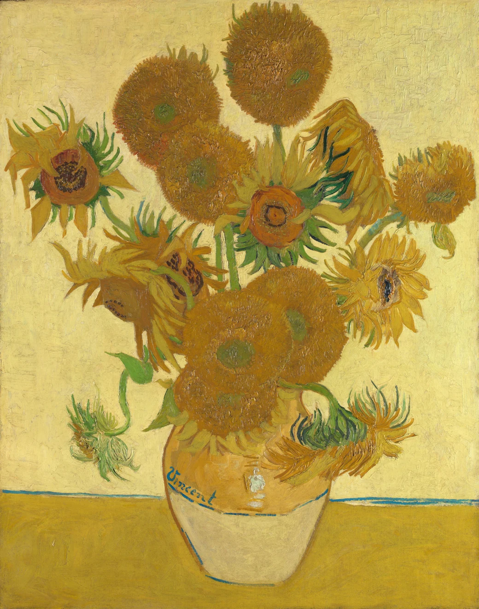

히마와리(Himawari)는 ‘해바라기’를 뜻합니다. 고흐가 그린 해바라기의 생기와 따뜻한 색감은 히마와리 가방의 배색으로 이어집니다.
고흐는 1888년 프랑스 아를에서 꽃병에 꽂힌 해바라기를 그렸습니다. 활짝 핀 꽃부터 고개를 숙인 꽃까지, 여러 모습의 꽃을 서로 다른 노란색으로 담았습니다.
몸체와 앞주머니의 색을 달리하거나 손잡이와 어깨끈에 색을 더합니다. 같은 모델도 옷차림과 취향에 따라 다른 색을 고를 수 있습니다.
About Himawari
빈센트 반 고흐의 〈해바라기〉에서 영감을 받았습니다. 여러 나라의 디자이너가 함께 오늘의 일상에 어울리는 가방을 만듭니다.
Inspired by Sunflowers
히마와리(Himawari)는 ‘해바라기’를 뜻합니다. 고흐가 그린 해바라기의 생기와 따뜻한 색감은 히마와리 가방의 배색으로 이어집니다.
고흐는 1888년 프랑스 아를에서 꽃병에 꽂힌 해바라기를 그렸습니다. 활짝 핀 꽃부터 고개를 숙인 꽃까지, 여러 모습의 꽃을 서로 다른 노란색으로 담았습니다.
몸체와 앞주머니의 색을 달리하거나 손잡이와 어깨끈에 색을 더합니다. 같은 모델도 옷차림과 취향에 따라 다른 색을 고를 수 있습니다.

매일 드는 가방에도 좋아하는 색을 담고 싶습니다.
Designed Together
익숙한 옷차림과 가방을 쓰는 방식은 문화마다 다릅니다. 디자이너는 각자의 일상에서 얻은 아이디어를 나누고 가방에 담습니다.
달라지는 옷차림을 살피면서 평소 입는 옷에도 자연스럽게 어울리는 실루엣과 배색을 고릅니다.
책과 필통을 챙기는 학생 가방과 노트북을 넣는 출근용 가방은 쓰임이 다릅니다. 필요한 물건을 나눠 담을 수 있도록 수납공간과 포켓을 구성합니다.
히마와리는 2010년부터 자체 공장에서 가방을 생산해 왔습니다. 학생용 백팩과 출근 가방부터 여행, 육아, 반려동물과의 외출에 쓰는 가방까지 선보입니다.